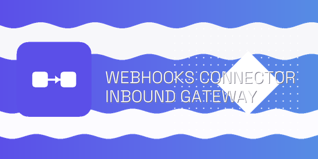

Bitwise Connector Webhooks Inbound provides an opt-in mixin
(bwt.connector.webhook.inbound.mixin) that connector backends inherit to
gain fully automated inbound webhook provisioning. Endpoints and handlers are created,
updated, and linked to the backend record without manual configuration.
connector_backend_ref on inbound endpoints and a computed webhook_endpoint_id on the backend_handle_inbound_webhook_event) routed via the framework's _invoke_inbound_dispatch hookbwt_connector_webhooks_corebwt_webhooks_inbound
Developed by Bitwise Technologies LLC.
Contributors: Youssef Egla.